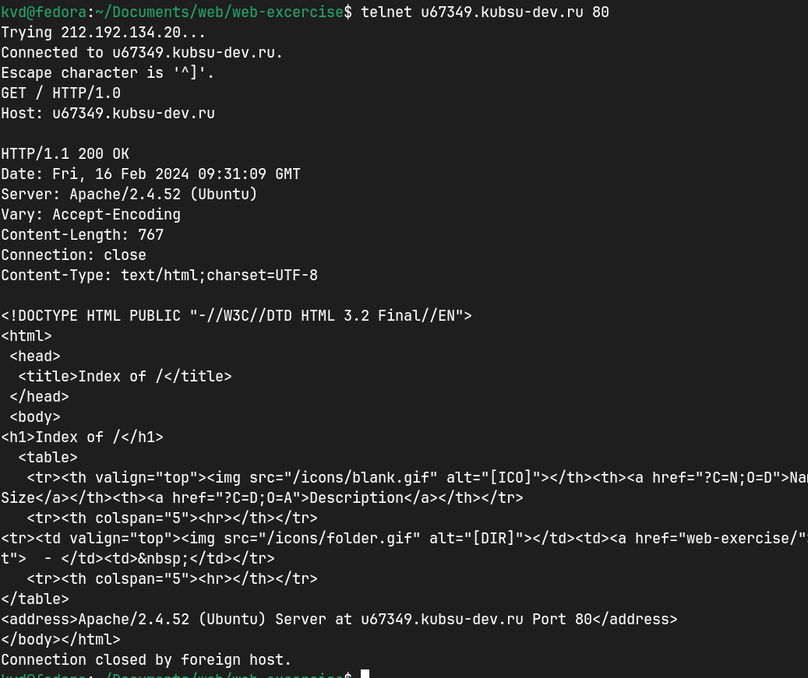
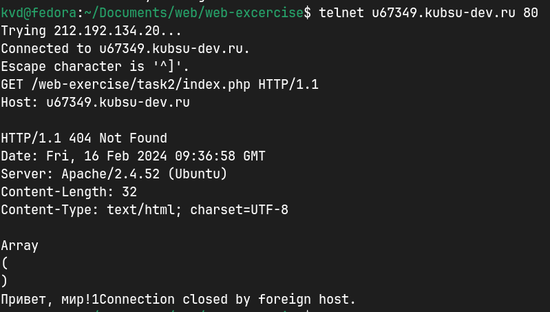
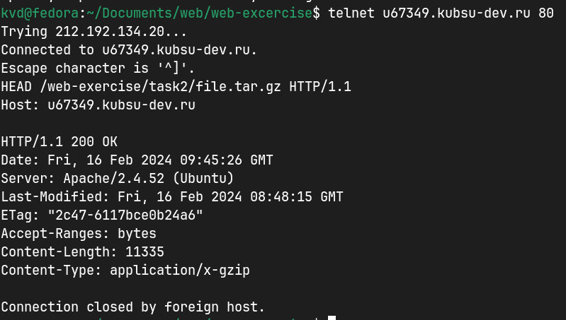
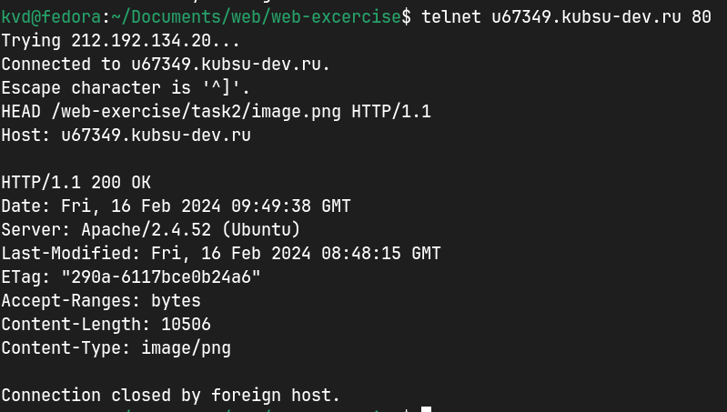
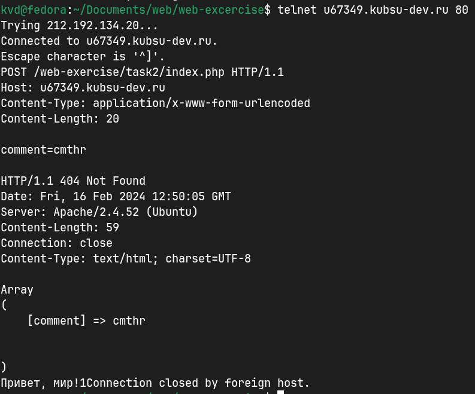
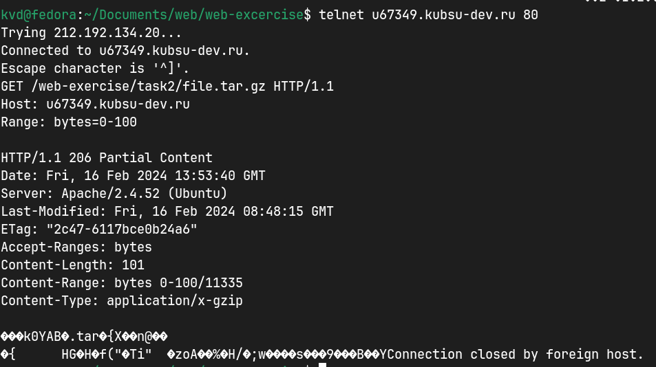
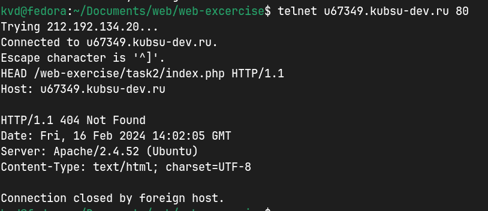

-
получить главную страницу методом GET в протоколе HTTP 1.0

-
получить внутреннюю страницу методом GET в протоколе HTTP 1.1

-
определить размер файла file.tar.gz, не скачивая его

-
определить медиатип ресурса /image.png

-
отправить комментарий на сервер по адресу /index.php

-
получить первые 100 байт файла /file.tar.gz

-
определить кодировку ресурса /index.php
